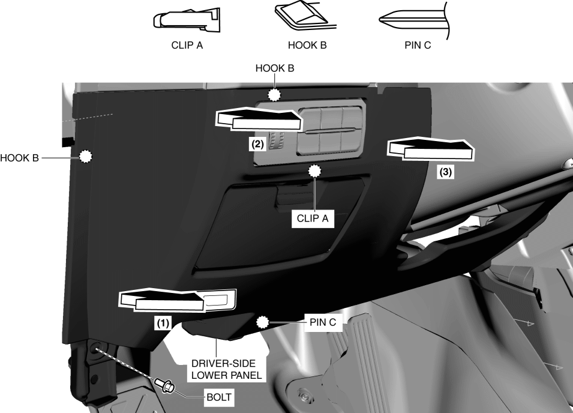
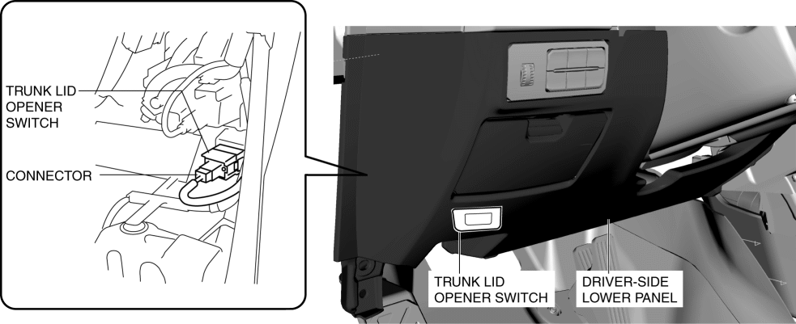
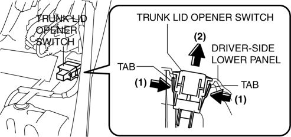
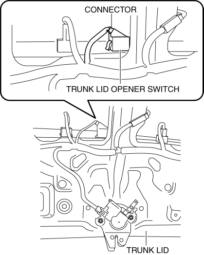
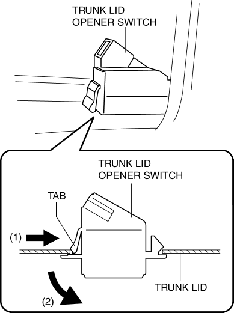

< Previous
Next >
2014 -
Mazda6 -
Body and Accessories
TRUNK LID OPENER SWITCH REMOVAL/INSTALLATION
Vehicle Interior
1. Disconnect the negative battery cable. (See NEGATIVE BATTERY CABLE DISCONNECTION/CONNECTION [SKYACTIV-G 2.5].)
2. Remove the bolt shown in the figure.

3. Pull the driver-side lower panel in the direction of the arrow in the order of (1), (2), (3) while detaching clip A, hooks B and pin C.
4. Partially peel back the driver-side lower panel.
5. Disconnect the connector from the trunk lid opener switch.

6. While pressing the trunk lid opener switch tab in the direction of arrow (1) shown in the figure, press it in the direction of arrow (2) to detach the trunk lid opener switch tab from the driver-side lower panel.

7. Remove the trunk lid opener switch from the driver-side lower panel.
8. Install in the reverse order of removal.
Vehicle Exterior
1. Disconnect the negative battery cable. (See NEGATIVE BATTERY CABLE DISCONNECTION/CONNECTION [SKYACTIV-G 2.5].)
2. Remove the trunk lid trim. (See TRUNK LID TRIM REMOVAL/INSTALLATION.)
3. Remove the trunk lid garnish. (See TRUNK LID GARNISH REMOVAL/INSTALLATION.)
4. Disconnect the connector.

5. While pressing the trunk lid opener switch tab in the direction of arrow (1) shown in the figure, press it in the direction of arrow (2) to detach the trunk lid opener switch tab from the trunk lid.

6. Remove the trunk lid opener switch from the trunk lid.
7. Install in the reverse order of removal.
< Previous
Next >
© 2012 Mazda North American Operations, U.S.A.